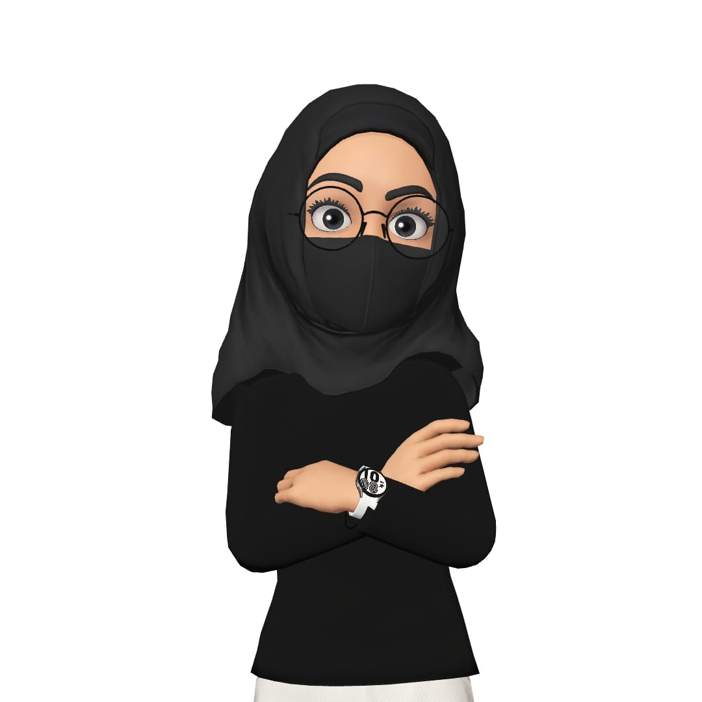

Ayesha Khalid
Web Developer

I am highly motivated web developer with a strong background in computer
science.
Education:
-
Associate Degree in Computer Science, Riphah Internation University,
Islamabad (2019-2021)
-
Bachelors of Computer Science, Capital University of Science and
Technology, Islamabad (2021-2024)
Work Experience:
Skills:
- HTML,CSS,Js
- React Js
- Php
- Content Writing
- Team work
- Team lead
Awards and Certifications
- Volunteer In Service, Penny Appeal (Feb 2022 - March 2022)
- Punjab Safety Officer (2020)
- Deen's Owner Role (Fall 2022)
Other